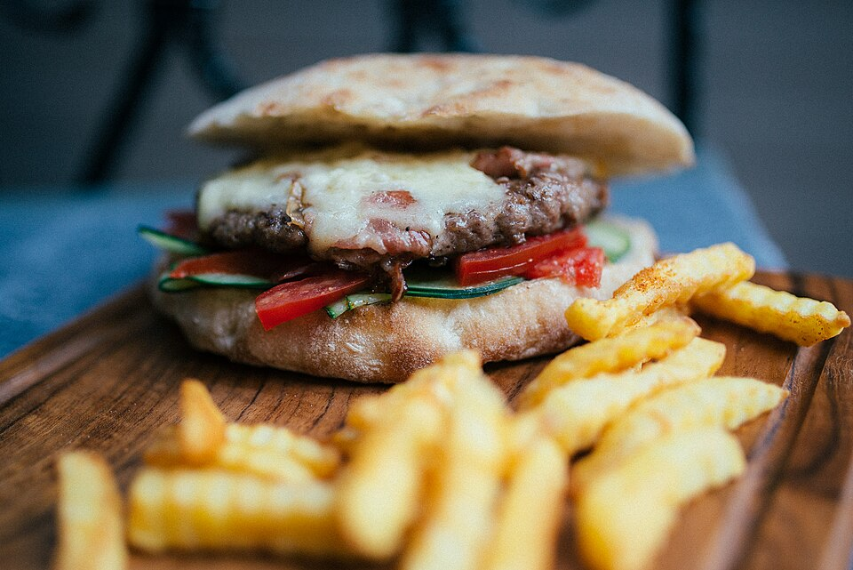

Pasture-Raised Bison
Our bison is sourced from regional Carolina ranches, offering a naturally leaner profile than commercial beef with rich mineral depth and zero hormones.
The burger philosophy at The Lodge rejects the frozen, pre-formed patties typical of corporate sports bars. We grind and hand-form our Angus beef and Carolina pasture-raised bison every morning, searing each patty at 450°F to develop a deep savory crust while preserving clean, lean tenderness within.

Carefully sourced meats, authentic Southern pantry staples, and precision flat-top heat.
Our bison is sourced from regional Carolina ranches, offering a naturally leaner profile than commercial beef with rich mineral depth and zero hormones.
Whipped daily from extra-sharp aged cheddar, roasted sweet pimentos, Duke's mayonnaise, and cayenne pepper, providing creamy richness to our signature burgers.
Buttered and toasted on the flat-top to create a crisp moisture barrier, ensuring the bun holds up to thick patties, bacon jam, and melted cheese without softening.
A true sportsman staple. Fresh, plump jalapeno peppers are split and seeded by hand, stuffed with our house pimento cheese, wrapped tightly in thick applewood-smoked bacon, and roasted until the bacon is crispy and the cheese is molten. Served with cool buttermilk ranch.
Explore All Appetizers →